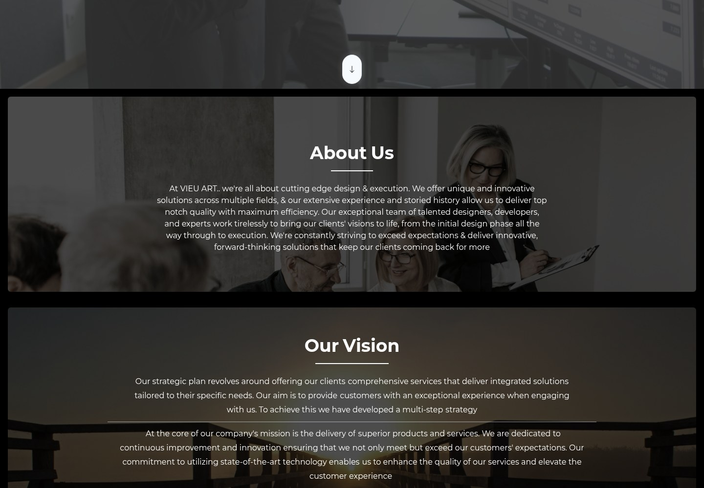
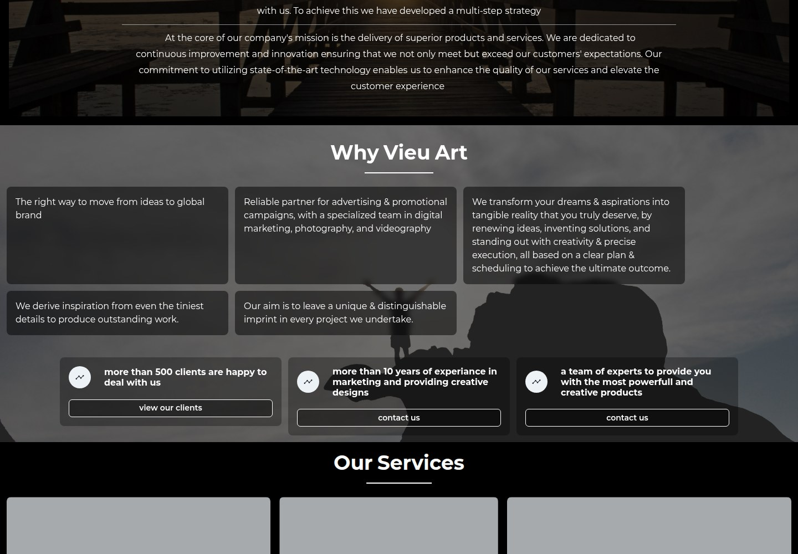
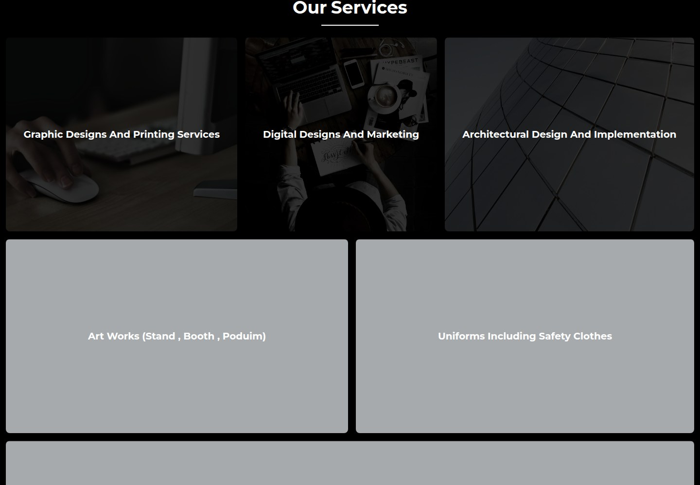
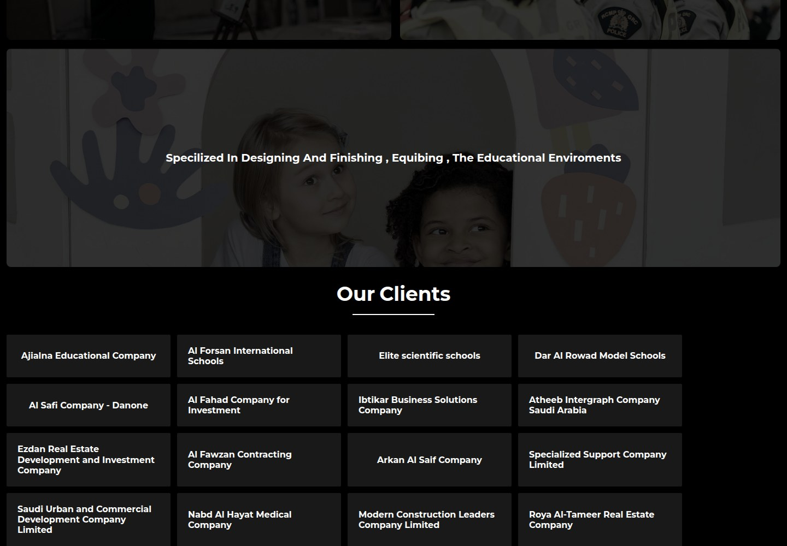
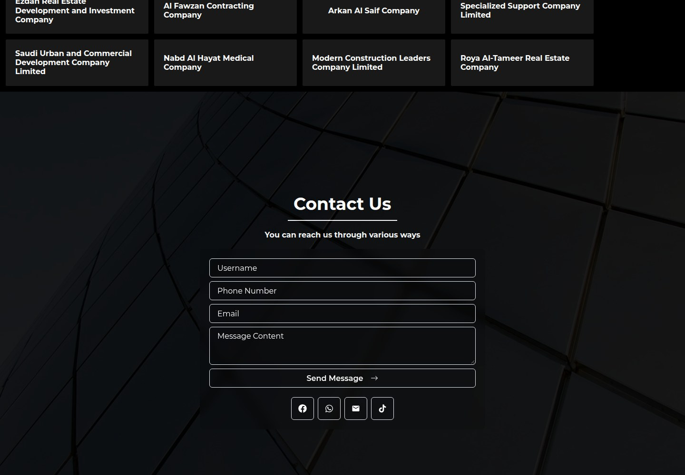
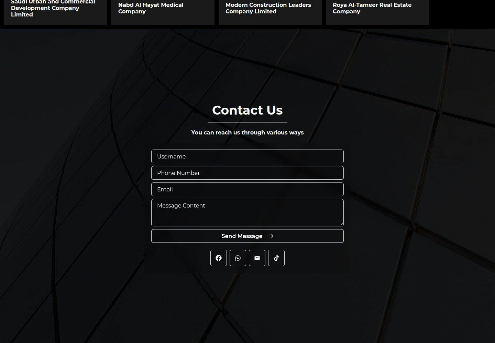
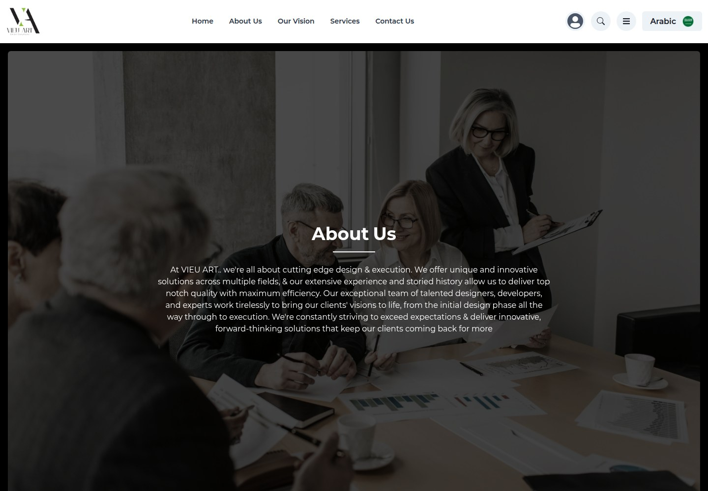
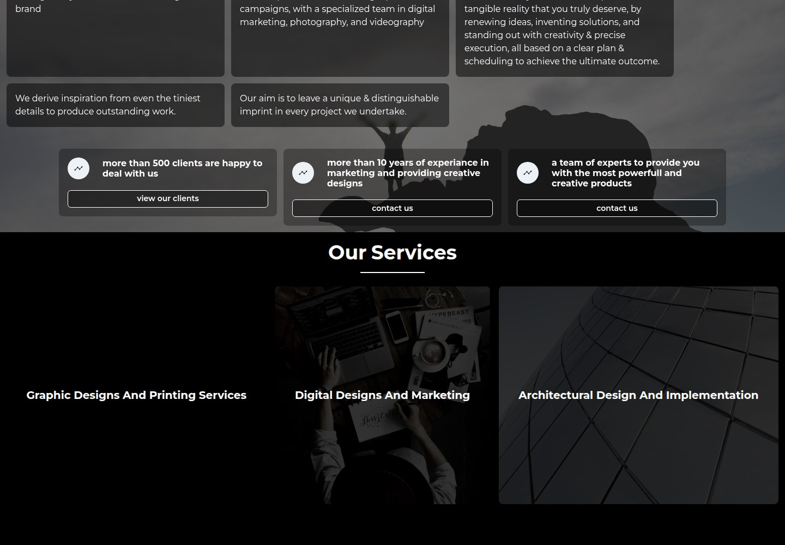
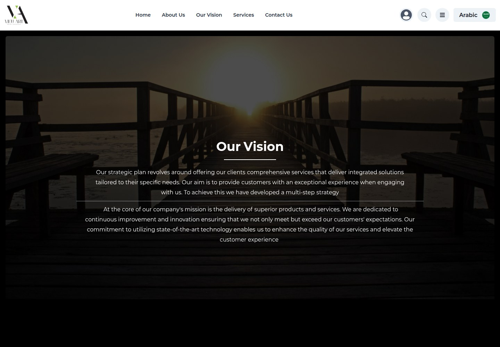
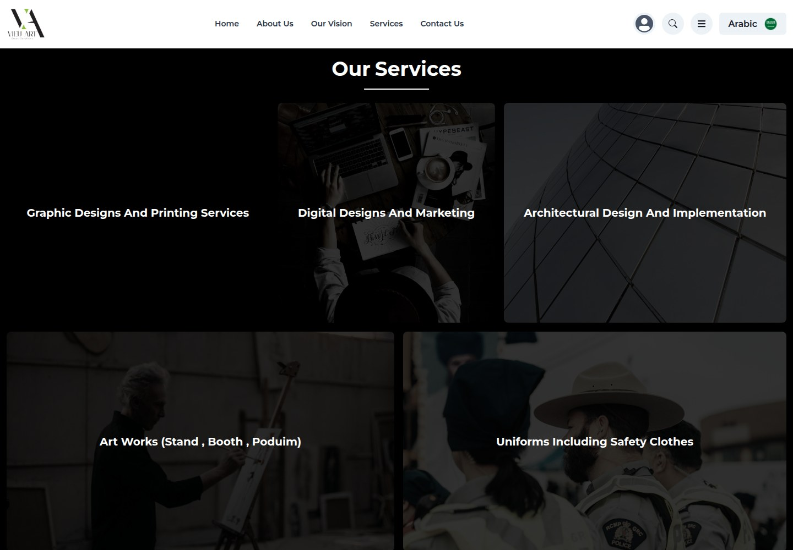

Vieu Art
Ideas, shaped into striking experiences.

WHAT IT IS
Creative design, advertising, and marketing services
Presents Vieu Art as a creative services provider spanning graphic design and printing, digital design and marketing, architecture, event/booth work, uniforms, and educational-environment design and fit-out. Its About copy describes taking client work from initial design through execution; the site also promotes advertising campaigns and photography/videography capabilities.
This case study documents what the linked website presents. Individual contribution to this project has not been confirmed.
WHAT THE WEBSITE OFFERS
- Homepage hero promotes a ‘success story’ and links to Contact Us via ‘start your success story with us’ (homepage).
- About section describes design-and-execution services and says the team includes designers, developers, and experts (homepage and /about).
- Our Vision page contains copy about tailored integrated services and customer experience (homepage and /our-vision).
- About page’s ‘Why Vieu Art’ section describes advertising and promotional campaigns, digital marketing, photography, and videography (homepage and /about).
- Services page lists Graphic Designs And Printing Services and Digital Designs And Marketing (/services).
- Services page also lists architectural design and implementation; Art Works (stand, booth, podium); Uniforms Including Safety Clothes; and educational-environment design, finishing, and equipping (/services).
- A linked Our Clients page presents a grid/list of named organizations, including Ajialna Educational Company, Al Forsan International Schools, and Al Safi Company - Danone (/clients).
- Contact page visibly provides Username, Phone Number, Email, and Message Content fields with a Send Message button; no form submission was made (/contact).
VISITOR JOURNEY
Use header navigation to open the verified Home (/), About Us (/about), Our Vision (/our-vision), Services (/services), and Contact Us (/contact) routes.
AUTHENTIC SCREEN CAPTURES · 11
Inside the experience.
Genuine, distinct screen captures supplied for this project. No screenshots have been fabricated or duplicated.









